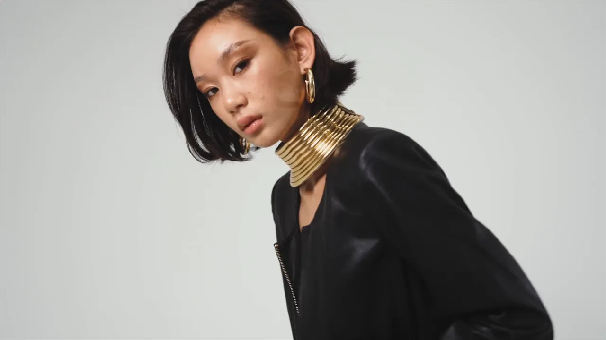
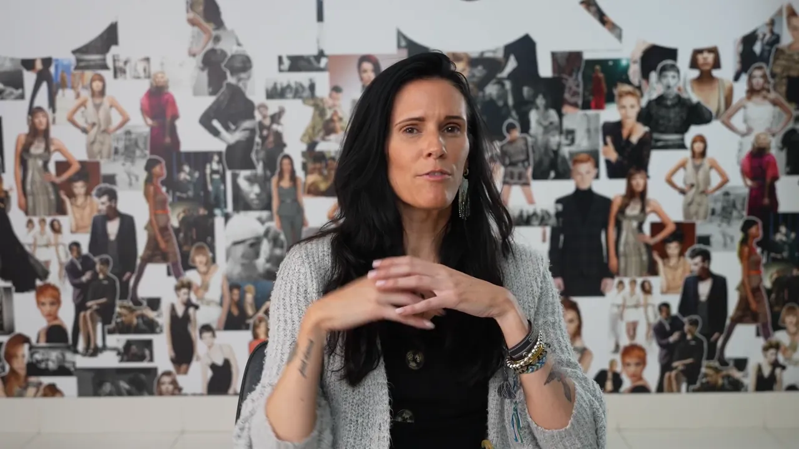

Dallas–Fort Worth video production
Video,
tailor-made.
Commercials, social ads, video podcasts, interview videos, brand films and music videos for Dallas–Fort Worth brands and agencies. One director plans, lights, shoots, edits and grades it, for one shoot or every month.
Quoted on scope, with a real quote in one business day.

- TONI&GUY Academy
- Hoodies+Stripes
- It’s a Secret Med Spa
- Oribe
- Marviano Cosmetics
- Juices & Botanics
- La Supreme Hair
Every format. One director.
Taylormade Creative is a downtown Dallas video production studio led by director Nelson Taylor, who plans, lights, shoots, edits and grades the work in-house.
- PodcastsVideo podcastsFull episodes cut like a big show, with a pack of vertical reels and a YouTube kit.See how an episode is made →
- Interview videos & brand filmsYour people, on cameraI plan the questions with you, ask them on set, and cut captioned clips from every interview video, wide and vertical.Quote a brand film or interview video →
- CommercialsProduct and promo spotsProduct, promo and voiceover spots, from the concept to the final grade.See commercials →
- Ad campaignsOn locationCampaigns shot where the brand lives, from a Dallas auto shop to a tropical lagoon.See the campaigns →
- Music videosBuilt around the trackConcept, direction, production and edit, built around your finished song.See music videos →
- Event filmsOpenings and launchesGrand openings and launches, cut into a film your marketing keeps using.Quote an event film →
Go deeper: video podcasts, commercials, social ad videos, music videos and interview videos. Training, leadership, testimonial and recruiting videos, plus content days, are on the corporate video page.
Monthly video
Your video team, on retainer.
Like having a video director in-house, without the hire. Tell me what you need each month and I'll quote it within one business day.
- Always something newA steady flow of video for your feeds and ads, instead of one big drop and a quiet quarter.
- Nobody to re-briefThe same director every month already knows your brand, your people and your look.
- Shoot days on the calendarShoots planned ahead around your launches, events and campaigns, not booked in a rush.
- Fresh ads, on scheduleNew cuts planned before the old ads wear out.
Video podcasts
Cut like a show.
Here's one: Auntie PB, Episode 1. Host Latasha and her guest on three cameras at the studio in downtown Dallas, recorded on camera and edited by me.
- Cold open
- Punch-ins
- Word-by-word captions
- Name cards in the first seconds
- Chapter titles
- Her brand graphics
- Five vertical reels with covers
A full edit can ship with the episode, a pack of vertical reels with covers and captions, and a YouTube kit: thumbnail, titles, description and chapters. For companies and creators.
Lighting
Lit in-house.
I light my own sets, at your location or in the studio, so the light is planned with the shot instead of fixed in the edit.
- FacesLight that suits the people on camera, from founders to first-time speakers.
- ProductGloss, texture and color shaped so the product reads on a small screen.
- PlacesYour office, store or set, lit to look like your brand.
Then every video is color graded by hand, so this month's footage matches last month's.
The work
Commercials, campaigns, a brand film, a music video and a podcast, made by the studio. Pick one to play it with sound, or see commercials and music videos.

Recruiting brand film · 0:53
TONI&GUY Academy
The academy's admissions and education directors, on camera, with the students at work.
Play with soundHow does a production run?
I'm Nelson Taylor (also known as Elliott Taylor), a creative director with fourteen years in design and creative direction. I plan it with you, then direct, light, shoot, edit and grade it myself.
- 01
A real quote in a day
Tell me what you're making and where it runs. You get the scope and the price within one business day.
- 02
Planned together
Concept, script help, locations and shot list, set before the shoot. A 50% deposit locks your date.
- 03
Lit and shot
I direct, light and shoot at your location anywhere in DFW, or at the downtown Dallas studio.
- 04
Cut and graded
Edited and color graded by hand, with two rounds of edits included.
- 05
Delivered
About two weeks after the shoot, in your client portal, in the shapes you need.
Shot at your location anywhere in Dallas–Fort Worth, from Plano, Frisco, Irving, Allen and McKinney to Southlake, Westlake, Fort Worth and Arlington, or at the downtown Dallas studio. Outside DFW, travel is added to the quote. Interview and talking-head videos come captioned, horizontal and vertical, with usage rights included. Raw footage is available for an extra fee, and script help and a teleprompter are available on set. Agencies: send the brief and the deliverables list.
Video production, answered
Updated October 2026. Also see video podcasts, commercials, social ad videos, music videos, corporate video and all FAQs.
What video production services does Taylormade Creative offer in Dallas?
Taylormade Creative is a Dallas–Fort Worth video production studio that makes commercials and ad campaigns, social media video ads, video podcasts, interview videos, brand films, product and promo videos, music videos and event films. It also makes corporate training, talking-head, testimonial and recruiting videos. Nelson Taylor directs, lights, shoots, edits and color grades the work in-house, at your location anywhere in DFW or in the downtown Dallas studio. Monthly video retainers are available.
How much does video production cost in Dallas?
Video production at Taylormade Creative is quoted on scope, so there is no flat price; every brief gets a real quote within one business day. The quote is built from the concept, the locations, the crew the shoot needs and how complex the edit is, plus how many videos and versions you need. Send your brief with a budget range and Nelson Taylor replies with your quote. A 50% deposit locks your production date.
What is a video retainer, and how do I start one?
A video retainer makes Taylormade Creative your video team month to month, instead of one project at a time. Each month you get the video you need, such as video podcast episodes, social media ads, interview videos or campaign content, directed and edited by Nelson Taylor in Dallas–Fort Worth. Each retainer is built around your needs. To start, pick what you need in “Build your month” on this page and send it; you get a quote within one business day.
Who produces video podcasts in Dallas?
Taylormade Creative produces video podcasts for companies and creators in its downtown Dallas studio. Nelson Taylor records the show on camera and edits the full episode like a big show: cold open, punch-ins, word-by-word captions, name cards, chapter titles and your brand graphics. A full edit can also include a pack of vertical reels with covers and captions, plus a YouTube kit with the thumbnail, titles, description and chapters. Episode and reel counts are set in your quote.
Do you make interview videos for companies?
Yes. Taylormade Creative films interview videos with executives, employees, customers and experts at your office anywhere in Dallas–Fort Worth or in the downtown Dallas studio. Nelson Taylor plans the questions with you before the shoot and asks them on set himself, so people answer in their own words. Every interview video comes as the full edit plus short captioned social clips, in horizontal and vertical versions with usage rights included. The clip count is set in your quote.
Who can make social media video ads in Dallas?
Taylormade Creative makes social media video ads for brands across Dallas–Fort Worth. Each ad is planned for the placements you run: vertical 9:16 for Reels, TikTok, Stories and YouTube Shorts, 4:5 or 1:1 for the feed, and 16:9 for YouTube and the web. Nelson Taylor frames the shoot so the product and the person stay in frame in every size. The placements and cuts are listed in your quote.
Do you produce commercials and ad campaigns?
Yes. Taylormade Creative produces commercials, product videos, promo videos and full ad campaigns for brands, including commercials with voiceover, with script help available. Recent work includes a commercial with voiceover for It’s a Secret Med Spa in Chicago, a TONI&GUY Academy × Plano ISD commercial, a Marviano Cosmetics lip gloss campaign shot in Dallas, a Juices & Botanics destination campaign and an Oribe product commercial. Every campaign is quoted on scope within one business day.
Do you direct music videos in Dallas?
Yes. Nelson Taylor of Taylormade Creative directs music videos in Dallas–Fort Worth, handling the concept, direction, production, lighting and edit, all built around the artist’s finished track. His work includes the music video for “Bizness” by Mariah.B. Every music video is quoted on scope: send the track, your references and a budget range, and you get a quote within one business day.
Do you do lighting for video shoots?
Yes. Nelson Taylor lights every Taylormade Creative shoot himself, on location anywhere in Dallas–Fort Worth or in the downtown Dallas studio. The same person who directs the video designs the light and later color grades the footage by hand, so the look holds from the set to the final file. Lighting is planned into each production’s quote along with the concept, locations and crew.
How long does a video take, and how many rounds of edits are included?
Standard delivery at Taylormade Creative is about two weeks after the shoot, with two rounds of edits included. Finished videos arrive through a private client portal. A 50% deposit locks the production date, and Nelson Taylor replies to every video inquiry within one business day with a real quote.
What formats do I get, are usage rights included, and can I get the raw footage?
Interview videos and talking-head videos from Taylormade Creative come captioned, in horizontal and vertical versions, with usage rights included. For commercials, social media ads, video podcasts and music videos, the formats, cuts and placements you need are listed in your quote. Raw footage is available for an extra fee. Everything is delivered through a private client portal.
Where do you shoot, and do you travel outside Dallas–Fort Worth?
Taylormade Creative is based in downtown Dallas and shoots at your location anywhere in Dallas–Fort Worth, including Dallas, Plano, Frisco, Irving, Allen, McKinney, Southlake, Westlake, Fort Worth and Arlington, or in the downtown Dallas studio. Nelson Taylor also travels for shoots outside DFW, with travel added to the quote.
Will you sign an NDA?
Yes. Taylormade Creative signs NDAs, so you can brief an unreleased product, a campaign that has not launched, or internal company material. Send your NDA with the brief and Nelson Taylor will sign it before the shoot. That goes for every kind of video production, from commercials and social media ads to interview videos and video podcasts.
Who directs, edits and color grades the videos?
Nelson Taylor, who also goes by Elliott Taylor, directs every Taylormade Creative production himself. He is the studio’s founder and creative director, with 14 years in creative direction and design, and he lights the set, edits the film and color grades the footage by hand. One person carries the look from concept to final file. When a shoot needs more crew, that is part of the quote.
Let’s make yours.
Tell me what you're making, where it will run and when you need it. One shoot or every month, you get a real quote within one business day.
Ads & social
One ad.
Every placement.
Framed with room to move, so one film runs wide on YouTube and tall on Reels, with the subject kept in frame. Tell me where it runs and the versions go in your quote.